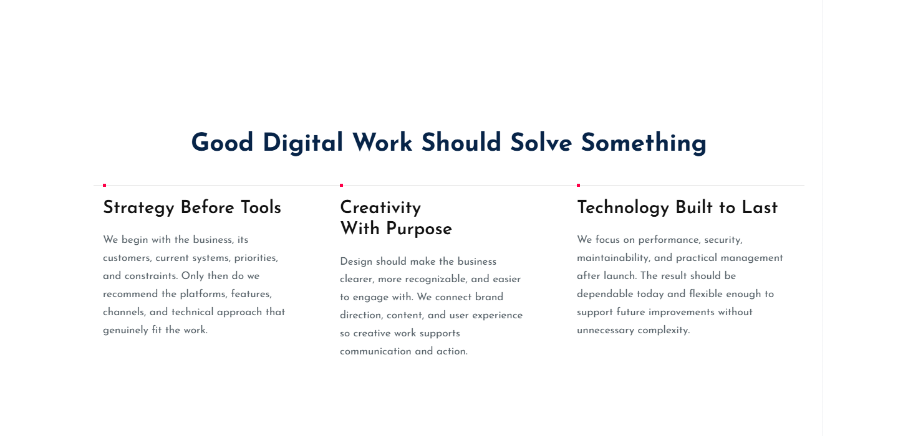
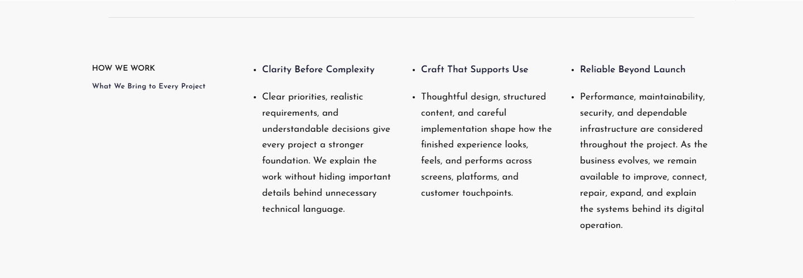
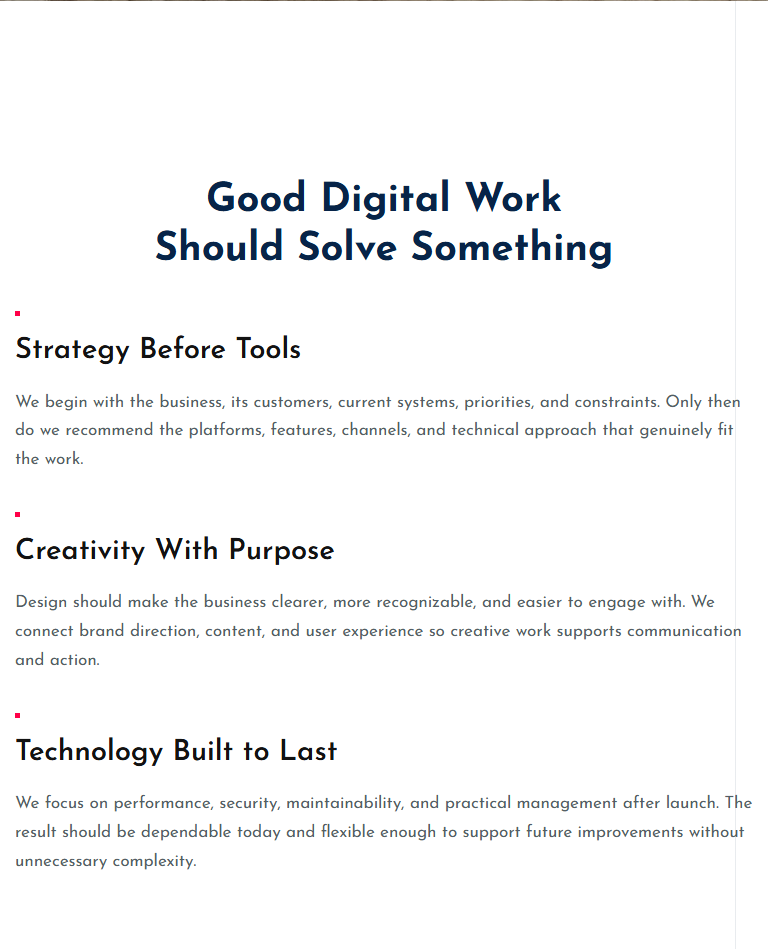
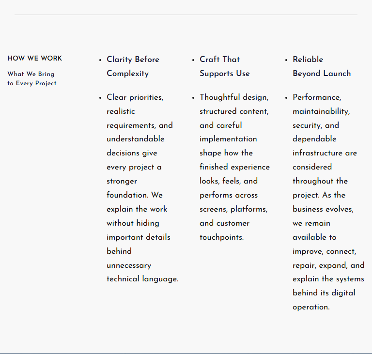
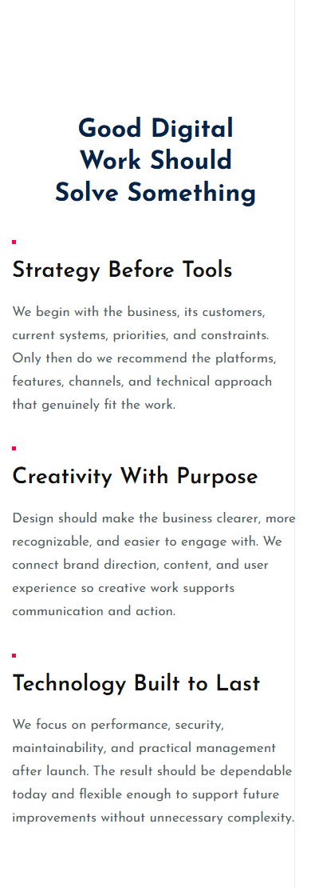
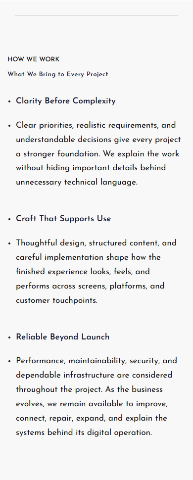
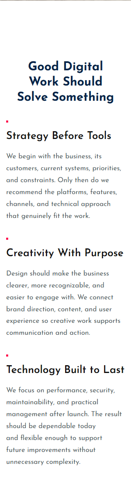
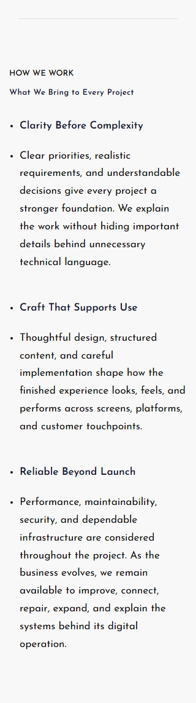

About draft 10 — content bindings
Unused centered body removed. Final label, heading and three column titles are now visible. No schema changes, fourth column, publication or deployment.
The existing grid and spacing rules are retained. The newly visible text naturally increases the final section’s automatic height; exact measurements are in the report.
Report · Checks · Private draft boundary
1440px


768px


390px


320px

